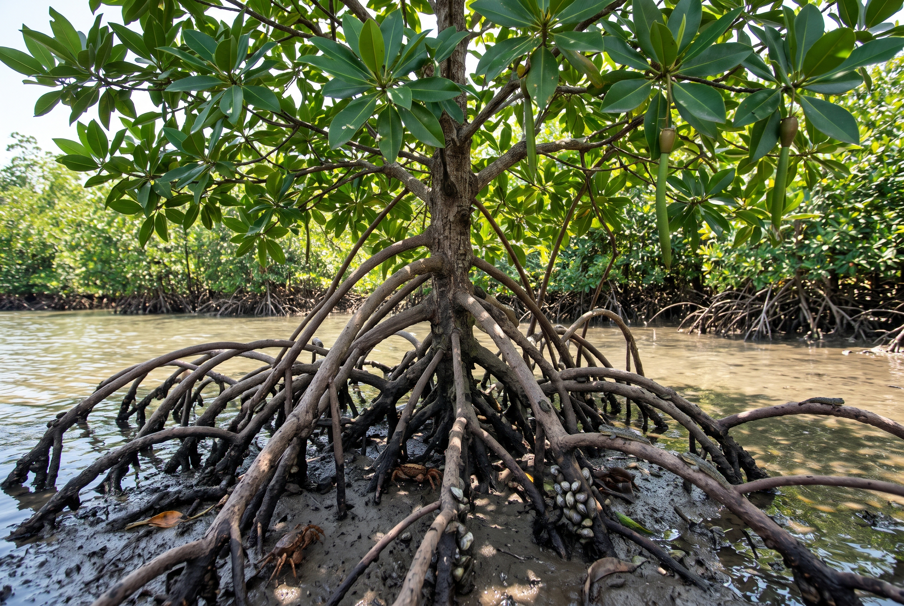
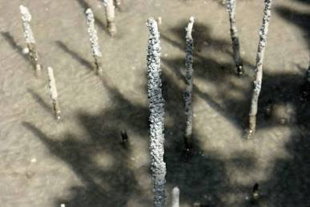
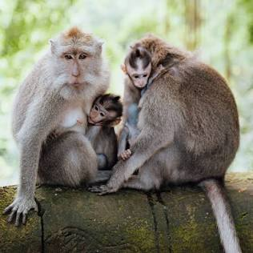
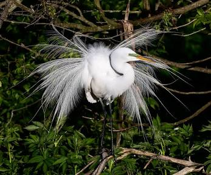
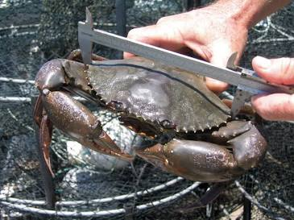

Bagaimana mangrove membantu mengurangi abrasi?
Memahami peran akar, sedimen, dan vegetasi di garis pantai.
Baca selengkapnya →Kenali beberapa spesies yang dapat dijumpai di ekosistem mangrove Surabaya, lalu rasakan suasana hutan dari tur panorama.
Spesies berikut merupakan contoh flora dan fauna ekosistem mangrove. Keberadaan di lokasi tertentu dapat berubah menurut musim dan kondisi habitat.

Akar tunjangnya yang khas menjadi tempat berlindung berbagai organisme pesisir.

Mampu tumbuh pada kondisi salinitas tinggi, dengan akar napas yang membantu pertukaran udara.

Primata yang beradaptasi di beragam habitat. Amati dari jauh dan jangan diberi makan.

Burung air yang mencari makan di perairan dangkal dan kawasan berlumpur.

Penghuni perairan payau yang menjadi bagian penting dari jaring-jaring makanan.

Perairan dan vegetasi mangrove menyediakan tempat beristirahat dan mencari makan.
Tidak ada spesies yang cocok. Coba kata kunci atau filter lain.
Geser panorama untuk mengamati ilustrasi suasana jalur boardwalk dan pemandangan menara. Gunakan mouse atau sentuhan.
Panorama ilustratif untuk pengalaman desain; bukan dokumentasi foto 360° resmi kawasan.
Pilih “Baca selengkapnya” untuk membuka artikel dan poin pentingnya.

Memahami peran akar, sedimen, dan vegetasi di garis pantai.
Baca selengkapnya →Ekosistem pesisir menyimpan karbon di atas dan di bawah permukaan.
Baca selengkapnya →Habitat, sumber makanan, dan ruang asuh bagi organisme pesisir.
Baca selengkapnya →Hutan mangrove menjadi salah satu penyangga alami di pesisir. Akar-akar yang rapat memperlambat aliran air dan membantu menangkap sedimen, sehingga dapat mengurangi energi gelombang yang mencapai tepian.
Akar tunjang dan akar napas membentuk struktur yang membantu menahan lumpur serta menyediakan tempat berlindung bagi biota kecil.
Manfaatnya bergantung pada kondisi habitat dan aliran pasang surut. Menjaga vegetasi dan tidak merusak jalur air membantu ekosistem tetap berfungsi.
Karbon biru adalah karbon yang diserap dan disimpan oleh ekosistem pesisir. Pada mangrove, karbon tersimpan dalam bagian tumbuhan—seperti batang dan akar—serta di dalam sedimen yang tergenang.
Daun dan batang menyimpan karbon dalam biomassa, sementara sedimen mangrove dapat menyimpan bahan organik dalam jangka panjang.
Melindungi hutan yang sudah tumbuh dan memulihkan kondisi air di area rehabilitasi membantu menjaga fungsi penyimpanan karbon alami.
Mangrove menyediakan ruang hidup dan sumber makanan bagi beragam organisme. Serasah daun yang terurai menjadi bagian dari rantai makanan, sedangkan akar dan tepian berlumpur menjadi tempat mencari makan atau berlindung.
Kepiting, ikan, moluska, dan burung berperan pada bagian berbeda dalam jaring-jaring kehidupan pesisir. Kehadiran satwa dapat berubah sesuai musim dan kondisi lokasi.
Amati satwa dari jarak aman, jangan memberi makan atau menangkapnya, dan tetap berada di jalur yang ditentukan pengelola.